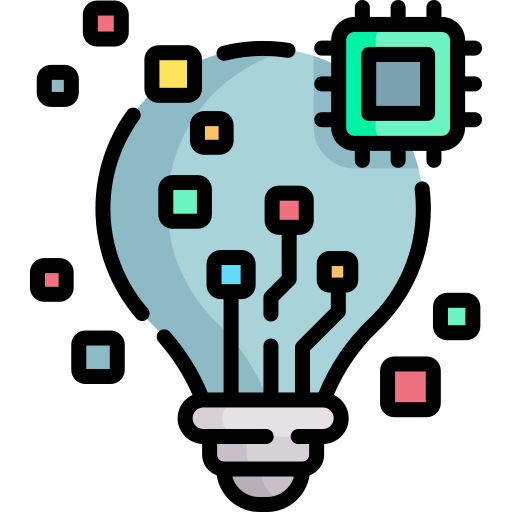
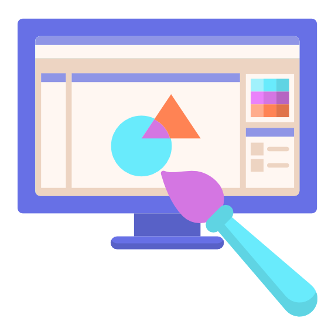
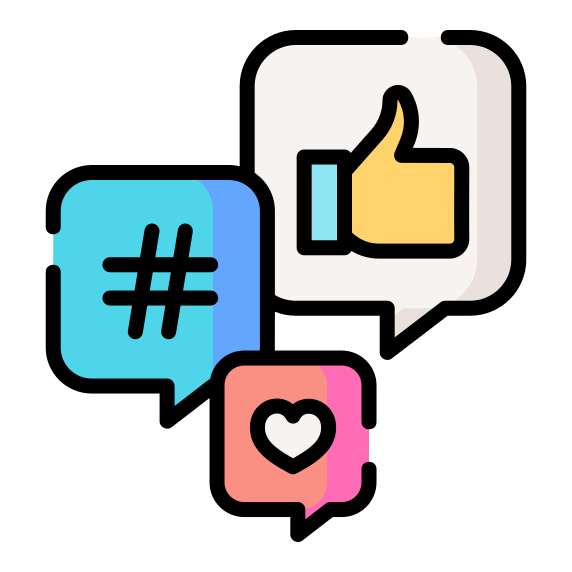
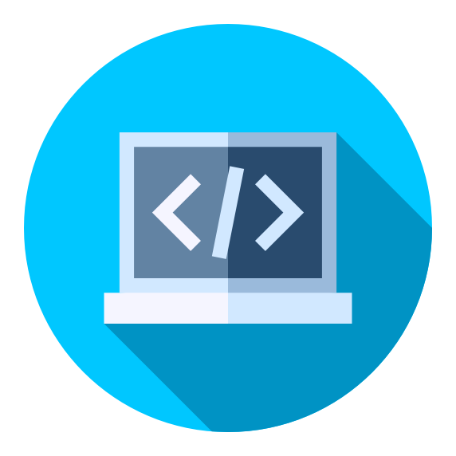

Despre noi
Crearea unei prezențe digitale nu înseamnă pur și simplu construirea unui site web și așteptarea clienților. Site-ul dvs. este baza online a companiei. Acesta servește drept punct de contact principal pentru clienți. Ca atare, trebuie să vă asigurați că ocupă un loc înalt în motoarele de căutare, că iese în evidență față de concurență și este funcțional.
Echipa Scorpion Tech este bazată pe o întreagă echipă de profesioniști, cu o experiență în programare web, design grafic, SEO și marketing online. Firma noastră s-a născut în anul 2019 în Alba Iulia și de atunci se află într-o continuă ascensiune. Garanția noastră este susținută de experiența acumulată, portofoliul nostru incluzănd colaborări cu peste 80 companii private atât din România, cât și din străinătate. Multe dintre proiectele noastre vin din recomandările vechilor clienți, fapt ce atestă funcționalitatea proiectelor noastre. Acoperim întreaga călătorie de evoluție digitală a clienților noștri, de la hardware la software și soluții de servicii gestionate. La noi, oamenii sunt pe primul loc și suntem fericiți să avem o echipă de minți grozave, cu inimile la locul potrivit. Clienții noștri primesc soluții tehnice de top și o echipă dedicată care colaborează cu ei la orice pas. Un aspect pe care echipa noastră pune accentul este timpul. Toți antreprenorii știu ce inseamnă această resursă de neprețuit, astfel noi nu o vom irosi, deci încercăm să-ți prezentăm design-ul site-ului tău web cât mai aproape de "final". Pentru noi faptele sunt mai importante decât cuvintele, așadar așteptăm să vă cunoaștem ca urmare a solicitării unei oferte.
Solicită o ofertă!
În calitate de proprietar de afaceri, este esențial să mențineți un design web receptiv pentru a atrage motoarele de căutare și utilizatorii online. Trebuie să vă asigurați că clienții țintă văd o platformă de afaceri legitimă atunci când vă caută compania online. În caz contrar, riscați să pierdeți încrederea din partea potențialilor clienți și să-i descurajați din a apela la serviciile dvs.
Servicii
Scorpion Tech oferă servicii IT de primă clasă pentru companiile care doresc să profite de noi oportunităţi. Cu servicii IT concepute, create şi puse în aplicare în conformitate cu activitatea dumneavoastră, aveţi posibilitatea să vă întoarceți la ceea ce vă place, afacerea dumneavoastră. Acestea sunt serviciile pe care vi le putem oferi:
Design grafic
Cum arată afacerea ta online contează... așa că noi ținem cont de: identitatea vizuală, culorile, logo-ul, imaginile, fonturile, site-ul web, mesajele transmise bine gândite. Acestea sunt șansa ta de a defini cine ești și ce faci, dar mai ales oportunitatea de a răspunde potențialilor clienti la întrebarea „de ce am nevoie de tine?”
Doar 300 € Ofertă
Marketing online
Echipa noastră de online marketing face analize detaliate pentru a se asigura că fiecare propoziție are înțeles și comunică valorile business-ului. Adaptăm stilul de scriere în funcție de identitatea brandul-ui, dar și de publicul țintă.
Serviciu în mentenanță Indisponibil
Programare web
Punem la dispoziţia clienţilor noştri o gamă largă de servicii de programare web: crearea de site-uri e-commerce pe diferite platforme, dezvoltare sau programare software, administrarea de website-uri, statistica traficului din site, mentenanţă website. Serviciile noastre includ toţi paşii necesari pentru a genera un rezultat de calitate: consultanţă, proiectare, programare, dezvoltare, instalare, testare, asistenţă, mentenanţă etc.
600 € Ofertă
Echipă
Aceștia sunt scorpionii noștri:
Amanda Bercu
Designer grafic
Amanda a fost prima persoană ce s-a alăturat echipei încă de la început, din anul 2019. Aceasta este licențiată în IT, lucrând în acest domeniu în SUA, Canada, Bangladesh, Regatul Unit cât și România. Amanda are un portofoliu de peste 90 colaborări cu firme din străinătate și ține cursuri de design grafic în Suedia și Irlanda în fiecare an.
Carina Popescu
Manager marketing
Carina a condus campania cu cea mai mare performanță în 2020, având o rată de deschidere de 25% și o medie de 500.000 USD în vânzări zilnice. Aceasta este o expertă în domeniu, câștigând concursuri internaționale de marketing.
Ecaterina Oancea
Programator web
Ecaterina este full stack web developer și programator. Ea construiește site-uri web personalizate moderne și receptive de cea mai bună calitate, având abilități solide la HTML, CSS, JavaScript, Bootstrap, C++ și Wordpress. Aceasta îți va gestiona proiectul într-un timp scurt, de la început până la sfârșit.